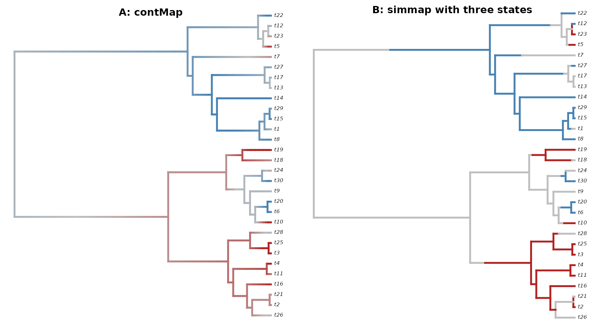
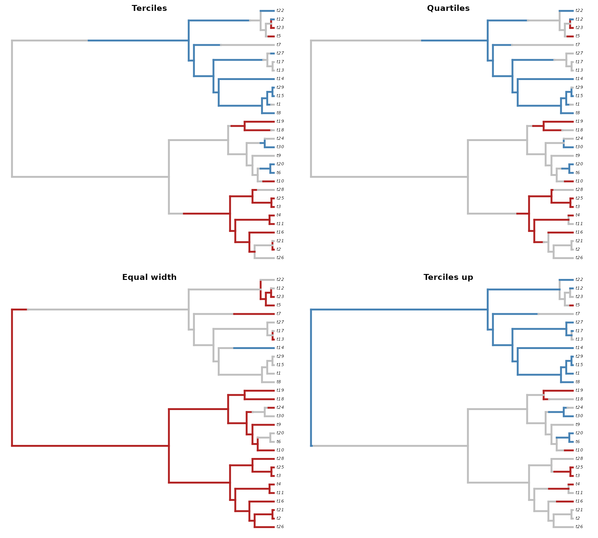
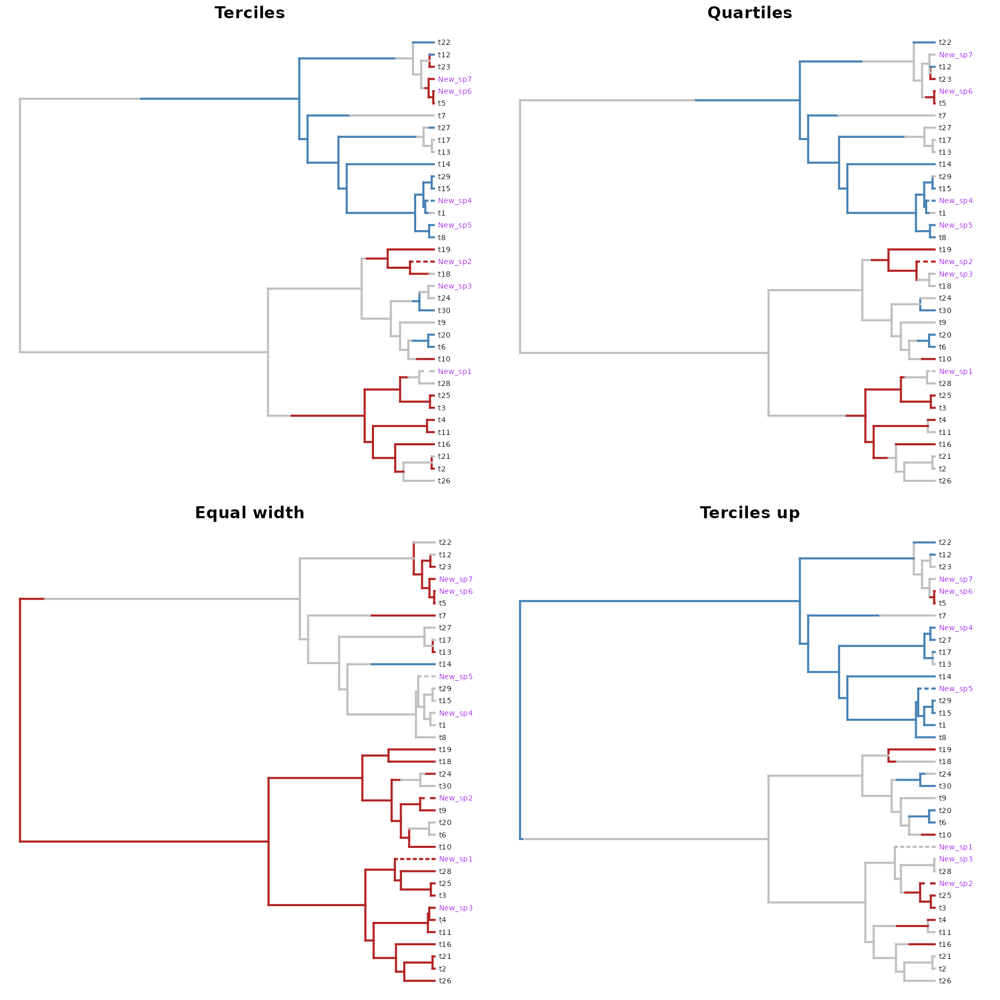
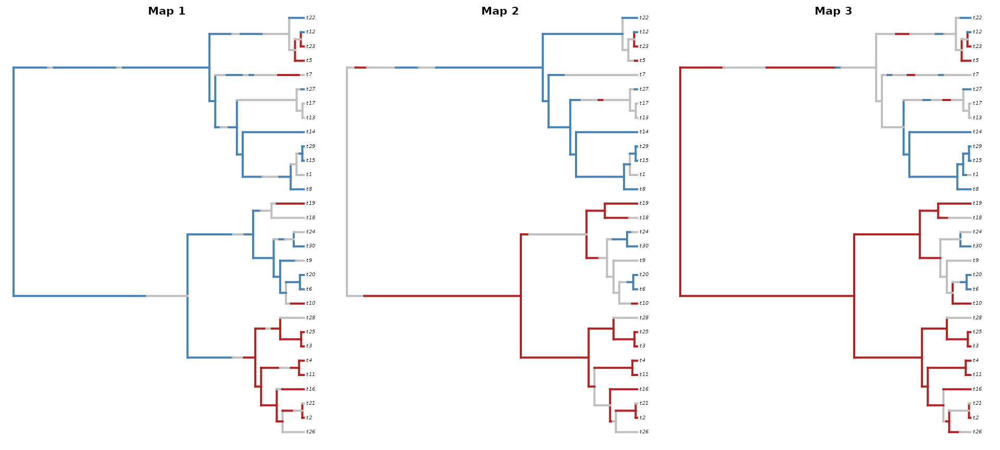
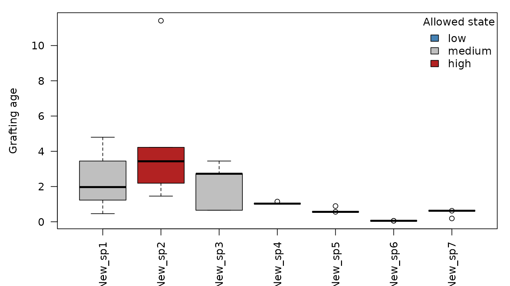
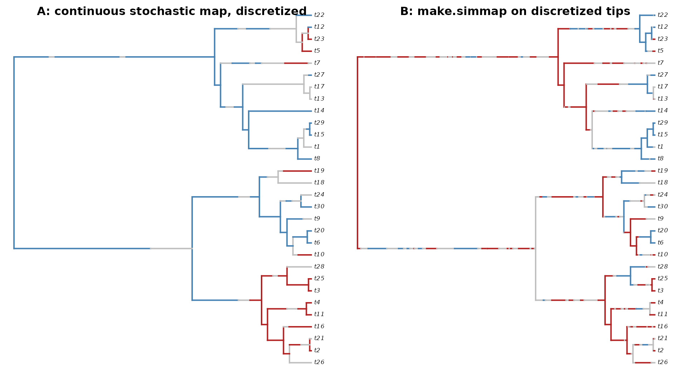
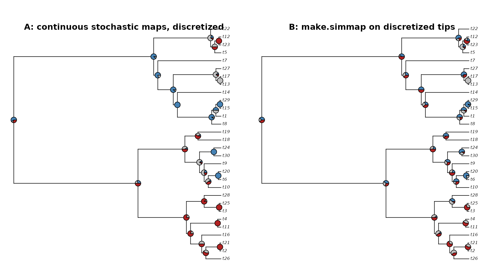

Use a continuous trait as constraint
Maël Doré
2026-11-27
Source:vignettes/continuous_data.Rmd
continuous_data.RmdGrafting can be constrained by species attributes
described by stochastic character maps
(simmap) of the backbone phylogeny, which have
discrete states. phylograftR is therefore not
designed to handle a continuous trait directly. This tutorial
explains the workaround: discretize the continuous trait into
states (e.g., "low", "medium",
"high"), and use the resulting simmap to
constrain the grafting.
The resulting
simmapis a constraint for the grafting, not a reconstruction of a discrete trait. It is a discretization of the continuous trait history, with the following consequences:
- Information is lost: all the values within a state are treated the same.
- The results depend on the thresholds used to cut the trait values: ideally, you would want to examine the robustness of the grafting to the choice of the thresholds.
- The number of transitions between states is dependent on your choice of thresholds: these maps must not be used to compute transition rates or counts of transitions. Use the initial continuous trait data to study evolutionary rates and shifts in trait values.
In this tutorial, we cover:
-
A single
contMap(point estimate of the trait history) converted into asimmap. - The robustness to the choice of the thresholds.
-
Continuous stochastic maps
(
contsimmap) converted into amultiSimmap, to account for the uncertainty in the trait history. - Why you should NOT discretize the tip data first
and build the
simmapwithphytools::make.simmap(). -
A complementary tool,
phytools::locate.yeti(), that places a taxon from its continuous trait values.
Is phylograftR the right tool for my continuous data?
phylograftR grafts many taxa at once, using their taxonomy and a
diversification model, and constrains the position of the grafts with
species attributes. If you have many continuous traits for a few
missing taxa and want to place each taxon from its own trait
values, phytools::locate.yeti() (Revell et al., 2015) may
be more suitable, or a good complement to phylograftR. See Section
5 for an explanation of how they differ and how to combine
them.
Other types of data
The principle of species attribute-based constraints is the same for all the types of data. For examples addressing different data types, please refer to:
-
categorical traits (single trait):
vignette("main_workflow"), and the examples ofvignette("graft_missing_taxa"),vignette("graft_missing_clades")andvignette("combine_missing_taxa_and_clades"); -
biogeographic ranges (multi-area states,
treat_states_as_ranges):vignette("biogeographic_data"); -
several traits at once:
vignette("multiple_traits"); -
several stochastic maps to account for the
uncertainty in the evolutionary history:
vignette("handle_uncertainty").
To build stochastic maps from your own data, see
vignette("prepare_stochastic_maps").
0/ Data
We use the toy backbone and three toy datasets of one continuous trait:
-
toy_tip_values: the tip values of the trait, simulated under a Brownian Motion. -
toy_contMap: thecontMapof this trait: the ancestral values are estimated by maximum likelihood under a Brownian Motion and interpolated along the branches (seephytools::contMap()). -
toy_contMaps: a list of 10contMaps, i.e., 10 stochastic histories of this trait that account for the uncertainty in its evolutionary history (see Section 3). 10 maps are enough for illustration, but all the maps (100 or more) should typically be used in actual analyses.
We also define the continuous values of the trait for the 7
toy missing taxa, as if they were measured. Two of them
(New_sp3 and New_sp7) have values close to the
cut point between the states "medium" and
"high" used below, to illustrate the effect of the
thresholds.
# ------ Toy data ------ #
data(toy_backbone)
data(toy_tip_values)
data(toy_contMap)
data(toy_contMaps)
data(toy_missing_taxa_list)
# Provide the continuous trait values of the 7 missing taxa
missing_values <- c(New_sp1 = 0.5, New_sp2 = 2.5, New_sp3 = 1.4, New_sp4 = -3,
New_sp5 = -1, New_sp6 = 3.5, New_sp7 = 1.6)In this tutorial, the trait is discretized into three states, with a
color for each of them. To ease the comparison between the continuous
and the discrete maps, we also use a continuous color scale
built from the three colors of the states to plot the
contMaps.
# ------ Names and colors of the states ------ #
state_names <- c("low", "medium", "high") # From the lowest to the highest values
state_colors <- c(low = "steelblue", medium = "grey75", high = "firebrick")
# ------ Build a continuous color scale matching the colors of the states ------ #
terciles <- quantile(toy_tip_values, probs = c(1/3, 2/3)) # Cut points used in Section 1 below
scale_colors <- colorRampPalette(state_colors)(101) # Continuous scale from blue to grey to red
# To match the discrete scale, we want each color to match with the median values of each group
# such as it partly adjusts to the distribution of trait values inside their range
# - "grey" is placed at the median of the "medium" state
# - "steelblue" is placed in the median of the "low" state
# - "firebrick" is placed in the median of the "high" state
# Build a regular sequence of trait values within their range
trait_values <- seq(toy_contMap$lims[1], toy_contMap$lims[2], length.out = length(toy_contMap$cols))
# Extract the median trait values for each group
anchors <- c(median(toy_tip_values[toy_tip_values < terciles[1]]),
median(toy_tip_values[toy_tip_values >= terciles[1] & toy_tip_values < terciles[2]]),
median(toy_tip_values[toy_tip_values >= terciles[2]]))
# Map the index of the color scale to fit the distribution of trait values
mapped_indices <- round(approx(x = anchors, y = c(1, 51, 101), xout = trait_values, rule = 2)$y)
# Update color scheme in the contMap
toy_contMap_colored <- toy_contMap
toy_contMap_colored$cols[] <- scale_colors[mapped_indices]1/ From a single contMap to a simmap
A contMap is a point estimate: it shows
the maximum likelihood estimates of the ancestral trait values,
interpolated along the branches. It does not account for the
uncertainty in the trait history (see Section 3 for
that).
convert_contMap_to_simmap() discretizes a
contMap into a simmap. The bins are defined by
cut points, provided with one of the three arguments:
-
breaks: cut points chosen by you, in the units of the trait; -
probs: quantiles of the tip values, e.g.,c(1/3, 2/3)for three bins with the same number of tips; -
n_bins: bins of equal width over the range of the tip values.
Here, we use the terciles of the tip values (i.e., three bins with
the same number of tips). Since a contMap interpolates the
values within short segments, the value of its last segment is nearly,
but not exactly, the observed value at the tip. Thus, we provide the
true observed tip values with tip_values.
With tip_values, the cut points are computed on the
observed data, and each tip is set in the state of its observed
value.
# ------ Convert one contMap into a simmap ------ #
simmap_terciles <- convert_contMap_to_simmap(contMap = toy_contMap,
probs = c(1/3, 2/3), # Terciles of the tip values
states = state_names, # From the lowest to the highest values
tip_values = toy_tip_values, # Observed tip values
verbose = FALSE)
# The cut points are stored in the output
attr(simmap_terciles, "breaks")
#> [1] -0.06642759 1.49246937
# Number of tips per state: is equal by design
table(factor(phytools::getStates(simmap_terciles, type = "tips"), levels = state_names))
#>
#> low medium high
#> 10 10 10We plot the resulting simmap next to the
contMap it comes from:
# ------ Compare the contMap and the simmap ------ #
par(mfrow = c(1, 2), mar = c(0.5, 0.5, 2, 0.5))
# plot(toy_contMap_colored, legend = FALSE, fsize = c(0.55, 0.8), lwd = 2, outline = FALSE, mar = c(0.5, 0.5, 2, 0.5))
plot(toy_contMap_colored, legend = FALSE, fsize = c(0.55, 0.8), lwd = 3, outline = FALSE)
title("A: contMap", line = -1, cex.main = 1)
phytools::plotSimmap(simmap_terciles, colors = state_colors, fsize = 0.55, ftype = "i", lwd = 3)
title("B: simmap with three states", line = -1, cex.main = 1)
The continuous values of the missing taxa are
converted into the same states with
convert_values_to_states(), using the attributes of the
simmap (cut points and names of the states), to ensure that
they fully coincide. The states are then used as the allowed
states of each taxon in the missing_taxa_list to
constrain the grafting to branch parts in the same states. See
Section 4 in vignette("graft_missing_taxa") if you
are not sure what are allowed states.
# ------ Convert the values of the missing taxa into allowed states ------ #
# Use the same cut points as for the simmap (the output is a named list, as expected for the allowed states)
taxon_states <- convert_values_to_states(values = missing_values, simmap = simmap_terciles)
# Use the states as the allowed states of each taxon in the missing_taxa_list
taxa_continuous <- toy_missing_taxa_list
taxa_continuous$allowed_states <- taxon_states
# Print as a data.frame for inspection
data.frame(Taxon_name = names(missing_values), Value = missing_values, Allowed_state = unlist(taxon_states), row.names = NULL)
#> Taxon_name Value Allowed_state
#> 1 New_sp1 0.5 medium
#> 2 New_sp2 2.5 high
#> 3 New_sp3 1.4 medium
#> 4 New_sp4 -3.0 low
#> 5 New_sp5 -1.0 low
#> 6 New_sp6 3.5 high
#> 7 New_sp7 1.6 highWe can now graft the taxa, with the simmap as
constraint, and explore the states of the grafted taxa:
# ------ Graft with the simmap as constraint ------ #
# Graft the missing taxa
grafted_single <- graft_missing_taxa(phy = toy_backbone, missing_taxa_list = taxa_continuous,
simmap = simmap_terciles, verbose = FALSE, seed = 1)
# State at the point of grafting (parent branch) and inherited by each taxon
info_single <- extract_grafting_info(grafted_single, missing_taxa_list = taxa_continuous)
data.frame(info_single[, c("Taxon_name", "parent_state", "tip_state")], Allowed_state = unlist(taxon_states), row.names = NULL)
#> Taxon_name parent_state tip_state Allowed_state
#> 1 New_sp1 medium medium medium
#> 2 New_sp2 high high high
#> 3 New_sp3 medium medium medium
#> 4 New_sp4 low low low
#> 5 New_sp5 low low low
#> 6 New_sp6 high high high
#> 7 New_sp7 high high highEach taxon is grafted on a branch piece in its allowed state, and inherits this state. This is a constraint: a taxon with a high value can only be grafted where the reconstructed trait is high. It assumes that the taxon has evolved from an ancestor with a high value. The result is then dependent on the cut points used to discretize the continuous trait data into states.
See Section 2 for an exploration of the robustness of analyses to the choice of thresholds.
This contMap is a point estimate: the grafting uses a
single trait history typically based on the
interpolation of ML estimates (see phytools::contMap()). It
does not account for the uncertainty in the reconstruction of the
ancestral values.
See Section 3 for how to handle uncertainty using continuous stochastic mapping.
2/ Robustness to the choice of the thresholds
The states, and thus the set of eligible branches of each taxon, depend on the cut points. A taxon with a value close to a cut point can be allowed in a different state if the cut point moves, and the extent of the states on the tree changes with the cut points. It is therefore useful to examine how the states allocated to the missing taxa, and the distribution of the states on the tree, change with the thresholds before running the grafting.
We compare four sets of thresholds defining three states, for the
same contMap and the same continuous values of the missing
taxa:
- the terciles of the tip values (1/3 and 2/3, as in the reference above);
- the quartiles, with three states cut at the 25% and 75% quantiles of the tip values (i.e., medium states comprise 50% of the tips);
- bins of equal width over the range of the tip values (i.e., states cover the same range of trait values, but may include different number of tips as data is not distributed uniformly across tips);
- the terciles shifted up by 0.5 unit of the trait (i.e., tips and branches that previously lied just above a cut off threshold now belongs to the lower state).
For each set, we discretize the contMap, and convert the
values of the missing taxa with the same cut points.
# ------ Compare sets of thresholds ------ #
# Arguments defining the cut points of each set
threshold_sets <- list(
Terciles = list(probs = c(1/3, 2/3)),
Quartiles = list(probs = c(0.25, 0.75)),
Equal_width = list(n_bins = 3),
Terciles_up = list(breaks = attr(simmap_terciles, "breaks") + 0.5))
# Helper: discretize the contMap with one set of thresholds,
# and convert the values of the missing taxa into allowed states
convert_with_thresholds <- function (threshold_args)
{
simmap <- do.call(convert_contMap_to_simmap,
c(list(contMap = toy_contMap, states = state_names, tip_values = toy_tip_values, verbose = FALSE), threshold_args))
list(simmap = simmap, states = convert_values_to_states(values = missing_values, simmap = simmap))
}
threshold_results <- lapply(threshold_sets, convert_with_thresholds)
# Extract the cut points of each set
sapply(threshold_results, function(x) round(attr(x$simmap, "breaks"), 2))
#> Terciles Quartiles Equal_width Terciles_up
#> [1,] -0.07 -0.28 -3.60 0.43
#> [2,] 1.49 1.72 0.31 1.99The table below gives the allowed state of each taxon for each set of thresholds:
# ------ Allowed state per taxon and set of thresholds ------ #
data.frame(Value = missing_values, sapply(threshold_results, function(x) unlist(x$states)))
#> Value Terciles Quartiles Equal_width Terciles_up
#> New_sp1 0.5 medium medium high medium
#> New_sp2 2.5 high high high high
#> New_sp3 1.4 medium medium high medium
#> New_sp4 -3.0 low low medium low
#> New_sp5 -1.0 low low medium low
#> New_sp6 3.5 high high high high
#> New_sp7 1.6 high medium high mediumThe effect of the thresholds can be strong:
- the state of a taxon changes with the cut points:
New_sp7(1.6) is"medium"instead of"high"with the quartiles and with the shifted terciles, and four taxa (New_sp1,New_sp3,New_sp4andNew_sp5) change state with the equal-width bins; - the distribution of the states on the tree changes
with the cut points. Over the whole tree,
"high"covers about 8% of the branch lengths with the shifted terciles, 22% with the terciles and 56% with the equal-width bins.
We plot the simmap obtained with each set to see how the
states change on the tree:
# ------ Compare the simmaps ------ #
par(mfrow = c(2, 2), mar = c(0.5, 0.5, 2, 0.5))
for (set_name in names(threshold_results))
{
phytools::plotSimmap(threshold_results[[set_name]]$simmap, colors = state_colors, fsize = 0.55, ftype = "i", lwd = 3)
title(gsub("_", " ", set_name), line = -1, cex.main = 1)
}
We graft the taxa with each of these simmaps, using the
same seed, and plot the updated simmaps of the
grafted phylogenies with plot_grafted(). The
grafted taxa are labelled in “purple” and their branches are dashed.
They take the state of the branch where they are grafted. The grafting
positions differ between the sets, because the allowed states of the
taxa, and the places where these states are found, are not the same.
# ------ Graft with each set of thresholds ------ #
# Helper: set allowed states in a list of missing taxa
set_allowed_states <- function (states)
{
taxa <- toy_missing_taxa_list
taxa$allowed_states <- states
taxa
}
# Graft and plot the updated simmap of the grafted phylogeny
par(mfrow = c(2, 2), mar = c(0.5, 0.5, 2, 0.5))
for (set_name in names(threshold_results))
{
grafted_set <- graft_missing_taxa(phy = toy_backbone, missing_taxa_list = set_allowed_states(threshold_results[[set_name]]$states),
simmap = threshold_results[[set_name]]$simmap, verbose = FALSE, seed = 1)
plot_grafted(grafted_set, simmap_colors = state_colors, color = "purple",
fsize = 0.55, lwd = 2, main = gsub("_", " ", set_name))
}
How to handle the sensitivity to the thresholds?
There are multiple solutions available to handle the sensitivity of the results to the choice of thresholds:
- Choose meaningful thresholds when possible (e.g., biological categories, such as size classes; thresholds that match with gaps in the continuous trait distribution), instead of default quantiles.
- Run the grafting with several sets of thresholds, and compare the results. If the conclusions of your analysis depend on the thresholds, consider that they are not robust.
- Allow several states for the taxa with values close to a cut point, to account for the uncertainty of their measure or of the thresholds. A taxon can have several allowed states.
Here, we illustrate the last option by applying a tolerance on the allowed states attributed to the missing taxa to graft based on their trait values.
We evaluate the effects using the check_grafting_plan()
function, to identify before grafting the branches
available for each taxon (within its target clade, and in the time
window of its grafting), and compute the
valid_fraction: the share of the length of these
available branches that is in the allowed states of each
missing taxon. A valid fraction of 1 means that the allowed states do
not restrict the grafting at all, whereas a small valid fraction means
that the grafting is restricted to a small share of the available
branches (a warning is raised when it is below
min_valid_fraction, 10% by default), and a valid fraction
of 0 makes the grafting impossible. The valid fraction is thus a measure
of how strong the constraint is for a taxon.
# ------ Check the grafting plan ------ #
# Check the initial grafting plan, without tolerance in the allowed states
plan_single <- check_grafting_plan(phy = toy_backbone, missing_taxa_list = taxa_continuous,
simmap = simmap_terciles, verbose = FALSE)
plan_single[, c("Taxon_name", "allowed_states", "valid_fraction", "feasible")]
#> Taxon_name allowed_states valid_fraction feasible
#> 1 New_sp1 medium 0.6457875 TRUE
#> 2 New_sp2 high 0.3386480 TRUE
#> 3 New_sp3 medium 0.4193135 TRUE
#> 4 New_sp4 low 0.6974326 TRUE
#> 5 New_sp5 low 0.7684345 TRUE
#> 6 New_sp6 high 0.6660073 TRUE
#> 7 New_sp7 high 0.4300766 TRUENow, we use the argument tolerance of
convert_values_to_states() to allow each taxon in
all the states covered by its value ± 0.3 (in the units
of the trait), with the terciles as thresholds. Only the taxa with a
value within 0.3 of a cut point get two states: here,
New_sp3 and New_sp7.
# ------ Allowed states with a tolerance around the value ------ #
# Convert the values into all the states covered by [value - 0.3, value + 0.3]
allowed_with_tolerance <- convert_values_to_states(values = missing_values, simmap = simmap_terciles, tolerance = 0.3)
allowed_with_tolerance
#> $New_sp1
#> [1] "medium"
#>
#> $New_sp2
#> [1] "high"
#>
#> $New_sp3
#> [1] "medium" "high"
#>
#> $New_sp4
#> [1] "low"
#>
#> $New_sp5
#> [1] "low"
#>
#> $New_sp6
#> [1] "high"
#>
#> $New_sp7
#> [1] "medium" "high"
# Update the missing_taxa_list with allowed states based on tolerance
taxa_tolerance <- toy_missing_taxa_list
taxa_tolerance$allowed_states <- allowed_with_tolerance
# Check the new grafting plan
plan_tolerance <- check_grafting_plan(phy = toy_backbone, missing_taxa_list = taxa_tolerance,
simmap = simmap_terciles, verbose = FALSE)
# Compare valid fractions between the two grafting plans
data.frame(Taxon_name = plan_single$Taxon_name,
Allowed_state = plan_single$allowed_states, Valid_fraction = round(plan_single$valid_fraction, 2),
Allowed_with_tolerance = plan_tolerance$allowed_states, Valid_fraction_with_tolerance = round(plan_tolerance$valid_fraction, 2))
#> Taxon_name Allowed_state Valid_fraction Allowed_with_tolerance
#> 1 New_sp1 medium 0.65 medium
#> 2 New_sp2 high 0.34 high
#> 3 New_sp3 medium 0.42 high, medium
#> 4 New_sp4 low 0.70 low
#> 5 New_sp5 low 0.77 low
#> 6 New_sp6 high 0.67 high
#> 7 New_sp7 high 0.43 high, medium
#> Valid_fraction_with_tolerance
#> 1 0.65
#> 2 0.34
#> 3 0.94
#> 4 0.70
#> 5 0.77
#> 6 0.67
#> 7 0.85The valid fraction of New_sp3 increases from 0.42 to
0.94, and that of New_sp7 from 0.43 to 0.85: their position
is less sensitive to the exact threshold. The cost is a weaker
constraint that allow the taxa to be grafted on branches with a large
range of trait values. In the end, the relevance of the
trade-off between a lesser sensitivity to thresholds,
but looser constraints on grafting, is for you to evaluate.
3/ Account for uncertainty: continuous stochastic maps
A single contMap is a point estimate of the history of
the trait: it represents a single trait history
typically based on the interpolation of ML estimates (if built with
phytools::contMap()). It does not account for the
uncertainty in the reconstruction of the ancestral values.
To account for the uncertainty in the trait history,
we can use several continuous stochastic maps: each map
is one possible history of the trait on the phylogeny, simulated
conditionally on the tip data and an evolutionary model. Each map is
then discretized, and gives a multiSimmap with one
simmap per history. Each map is then used as
attribute-based constraint for a different grafted
phylogeny.
The continuous stochastic mapping approach is implemented in the R
package contsimmap. The function
deepSTRAPP::prepare_trait_data() is the recommended
way to get the maps: with
run_stochastic_maps = TRUE, it fits the
evolutionary model(s) (selected by AICc), runs the
continuous stochastic mapping with
contsimmap::make.contsimmap(), and converts the
maps into a list of contMaps, all in one call,
with additional options to fine-tune the process (e.g., comparison of
several models, resolution of the contMaps, number of
simulations, etc.). It also returns the point-estimate
contMap of Section 1.
The code below shows the steps with
contsimmap, which are run internally by
deepSTRAPP::prepare_trait_data(), for a more didactic
explanation. It requires packages that may not be installed
(contsimmap is not on CRAN), so it is not run
here. This is the script used to build
toy_contMaps:
# ------ Not run: build the list of contMaps with contsimmap ------ #
# Estimate the evolutionary rate (sigma²) of a BM
BM_fit <- phytools::anc.ML(tree = toy_backbone, x = toy_tip_values, model = "BM")
sigma2 <- BM_fit$sig2
# Simulate 100 continuous stochastic maps conditioned on the tip data, the phylogeny and the BM
my_contsimmap <- contsimmap::make.contsimmap(tree = toy_backbone, trait.data = toy_tip_values,
Xsig2 = list(sigma2), nsim = 100)
# Convert into a list of contMaps
my_contMaps_list <- deepSTRAPP::convert_contsimmap_to_contMaps(contsimmap = my_contsimmap)
# Keep only the first 10 maps in the shipped dataset `toy_contMaps`, to keep the package light:
# 10 maps are enough for illustration, but use all your maps (100 or more) in actual analyses
my_contMaps_list <- my_contMaps_list[1:10]
# Alternative (recommended): all the steps above in one call with deepSTRAPP
my_trait_data <- deepSTRAPP::prepare_trait_data(tip_data = toy_tip_values,
trait_data_type = "continuous",
phylo = toy_backbone, seed = 1234,
evolutionary_models = "BM",
run_stochastic_maps = TRUE,
nb_simulations = 100, plot_map = FALSE)
my_contMap <- my_trait_data$contMap # Point estimate of the interpolated ML estimates
my_contMaps_list <- my_trait_data$contMaps # List of contMaps from the stochastic mapsThe list of contMaps is the input you
need to constrain the grafting with a continuous trait. The first step
is to discretize all the contMaps at once
into a multiSimmap, with
convert_contMap_to_simmap(). Here, we use the shipped list
toy_contMaps (10 maps), with the same thresholds as in
Section 1.
# ------ Discretize the list of contMaps into a multiSimmap ------ #
# Use the shipped list of continuous stochastic maps loaded in Section 0 (10 maps)
# Discretize all contMaps at once using the same cut points
multiSimmap_continuous <- convert_contMap_to_simmap(contMap = toy_contMaps,
probs = c(1/3, 2/3), # Terciles of the tip values
states = state_names,
tip_values = toy_tip_values, # Observed tip values
verbose = FALSE)
class(multiSimmap_continuous)
#> [1] "multiSimmap" "multiPhylo"
length(multiSimmap_continuous)
#> [1] 10We plot three of these histories. They differ in the internal branches, because the ancestral values are uncertain, but all have the same tip states (the observed values).
# ------ Plot three histories ------ #
par(mfrow = c(1, 3), mar = c(0.5, 0.5, 2, 0.5))
for (i in 1:3)
{
phytools::plotSimmap(multiSimmap_continuous[[i]], colors = state_colors, fsize = 0.5, ftype = "i", lwd = 2)
title(paste("Map", i), line = -1, cex.main = 1)
}
The cut points are the terciles of the observed tip values, as in
Section 1, so the allowed states of the missing taxa
are the same. The grafting plan summarizes the valid fraction
of each taxon (see Section 2) across the 10
maps, and the number of maps with no eligible branch
(n_maps_infeasible), which would stop the grafting:
# ------ Grafting plan across the maps ------ #
plan_multi <- check_grafting_plan(phy = toy_backbone, missing_taxa_list = taxa_continuous,
simmap = multiSimmap_continuous, verbose = FALSE)
plan_multi[, c("Taxon_name", "allowed_states", "valid_fraction_min", "valid_fraction_mean", "valid_fraction_max", "n_maps_infeasible")]
#> Taxon_name allowed_states valid_fraction_min valid_fraction_mean
#> 1 New_sp1 medium 0.07330316 0.2061955
#> 2 New_sp2 high 0.17153725 0.4751588
#> 3 New_sp3 medium 0.23469248 0.3350196
#> 4 New_sp4 low 0.30641135 0.6194761
#> 5 New_sp5 low 0.56986789 0.7213988
#> 6 New_sp6 high 0.25000000 0.7250000
#> 7 New_sp7 high 0.25234532 0.4693648
#> valid_fraction_max n_maps_infeasible
#> 1 0.2977864 0
#> 2 0.7773015 0
#> 3 0.4876070 0
#> 4 0.8582170 0
#> 5 0.9371411 0
#> 6 1.0000000 0
#> 7 0.5727688 0The valid fraction of a taxon varies among the maps: the point
estimate of Section 1 hides this variation. We count the number
of maps below the default min_valid_fraction of 10%, which
triggers a warning at grafting:
# ------ Number of maps with a low valid fraction ------ #
plan_per_map <- attr(plan_multi, "per_map") # Plan of each map
tapply(plan_per_map$valid_fraction < 0.1, plan_per_map$Taxon_name, sum)
#> New_sp1 New_sp2 New_sp3 New_sp4 New_sp5 New_sp6 New_sp7
#> 2 0 0 0 0 0 0We graft the taxa with each of the 10 maps (with one simulation per
map). We silence the warnings about the low valid fractions, which are
summarized above, using min_valid_fraction = 0 (i.e.,
warnings are sent only if no branch piece is available for
grafting).
# ------ Graft with the multiSimmap ------ #
grafted_multi <- graft_missing_taxa(phy = toy_backbone, missing_taxa_list = taxa_continuous,
simmap = multiSimmap_continuous,
min_valid_fraction = 0, nb_simulations = 1,
seed = 1, verbose = FALSE)
# One element per map
length(grafted_multi)
#> [1] 10To see how the uncertainty in the trait history is propagated to the
grafted phylogenies, we extract a posteriori the
grafting information of each taxon in each map using
extract_grafting_info(), and summarize their graft
age (i.e., when the lineage branched from the backbone).
# ------ Position of the grafts across the maps ------ #
info_multi <- extract_grafting_info(grafted_multi, missing_taxa_list = taxa_continuous, phy_backbone = toy_backbone)
# Number of backbone branches used for the grafting, and range of grafting ages across the 10 maps
data.frame(Allowed_state = unlist(taxon_states),
N_parent_branches = tapply(info_multi$parent_node, info_multi$Taxon_name, function(x) length(unique(x))),
Graft_age_min = round(tapply(info_multi$graft_age, info_multi$Taxon_name, min), 2),
Graft_age_median = round(tapply(info_multi$graft_age, info_multi$Taxon_name, median), 2),
Graft_age_max = round(tapply(info_multi$graft_age, info_multi$Taxon_name, max), 2))
#> Allowed_state N_parent_branches Graft_age_min Graft_age_median
#> New_sp1 medium 2 0.46 1.97
#> New_sp2 high 7 1.46 3.43
#> New_sp3 medium 6 0.65 2.73
#> New_sp4 low 6 1.03 1.03
#> New_sp5 low 2 0.56 0.56
#> New_sp6 high 1 0.06 0.06
#> New_sp7 high 1 0.19 0.63
#> Graft_age_max
#> New_sp1 4.80
#> New_sp2 11.41
#> New_sp3 3.45
#> New_sp4 1.15
#> New_sp5 0.89
#> New_sp6 0.06
#> New_sp7 0.63
# ------ Distribution of the grafting ages across the maps ------ #
par(mar = c(4.5, 4.5, 1, 1))
boxplot(graft_age ~ Taxon_name, data = info_multi, ylab = "Grafting age", xlab = "", las = 2,
col = state_colors[unlist(taxon_states)[levels(factor(info_multi$Taxon_name))]])
legend("topright", legend = state_names, fill = state_colors[state_names], title = "Allowed state", bty = "n")
The grafting age of a taxon varies among the maps: this is how the uncertainty in the trait history is propagated to the grafted phylogenies. The taxa with a restrictive constraint, or with a state found in a few places only, are less variable. Conversely, taxa restricted to states found in many branches that may vary between inferred evolutionary histories are much more variable in their placement and graft age.
See vignette("handle_uncertainty") for the use of
several maps combined with several simulations to fully handle all
sources of uncertainty.
Do not interpret the number of transitions
The maps derived from continuous stochastic maps cross the cut points many times along the branches, because the continuous trait wanders according to a Brownian motion, and thus can cross thresholds many times in a short time span. This produces many short segments that alternate between states, which should not be interpreted as transitions of a discrete trait.
To illustrate this issue, we compare the number of “transitions”
recorded in the simmap based on the discretization of the
point-estimate contMap (i.e.,
simmap_terciles) vs. “transitions” recorded in simmaps
based on the continuous stochastic maps (i.e.,
multiSimmap_continuous).
# ------ Number of changes of state per map ------ #
# Number of changes of state per map (number of segments - number of branches)
n_changes <- sapply(multiSimmap_continuous, function(x) sum(lengths(x$maps) - 1))
summary(n_changes)
#> Min. 1st Qu. Median Mean 3rd Qu. Max.
#> 20.00 28.00 33.00 32.10 36.75 42.00
# Compare with the contMap (based on a monotonic interpolation of the values along each branch)
sum(lengths(simmap_terciles$maps) - 1)
#> [1] 14The point-estimate contMap based on a monotonic interpolation of the ML estimates along each branch record 14 “transitions”, while the continuous stochastic maps produced on average ca. 32 “transitions”, up to 55.
The argument min_segment_proportion of
convert_contMap_to_simmap() limits this effect: segments
shorter than this proportion of the depth of the tree (1% by default,
i.e., 0.5 for a tree of root age 50) are merged into their longest
neighbor on the branch to prevent recording fast transient
transitions around the thresholds. Setting
min_segment_proportion = 0 keeps every
crossing of a cut point: the maps then have more segments and
more changes of state. A larger value merges more segments and gives
smoother maps.
Either way, the discrepancy between maps highlights that the
changes of state remain an artifact of the discretization and
depend on the choice of thresholds, the resolution of the continuous
maps, and the min_segment_proportion argument. Therefore,
you should not use these maps to estimate transition rates or
counts of transitions. They are only a tool to describe where
the trait is in each range of values, to constrain the grafting based on
a continuous trait in an informative way.
4/ Why you should NOT discretize the tip data to build stochastic maps
Another approach to convert continuous trait histories into character
maps may seem tempting: discretize the tip values
first, and then build the simmap as for any
categorical trait with phytools::make.simmap(). We
do not recommend it. The discrete trait is then modeled
as a discrete trait that evolves by transitions between states,
and the continuous values of the tips are not used anymore. As a
result:
- The information within each state is lost before the reconstruction: two tips with very different values in the same state are treated as identical, and two tips with close values on each side of a cut point are treated as different. This loss of information means a loss of phylogenetic signal useful for inferring the ancestral trait values.
- The ancestral states may be incompatible with the ancestral values that the continuous reconstruction suggests, which are the information you want to use to constrain the grafting.
We illustrate this issue with the data of the previous sections. We
discretize the tip values into the states of Section 1, and
build 10 stochastic maps with an ordered model, where the changes are
only allowed between neighboring states ("low" <->
"medium" <-> "high"), with an equal rate
in both directions.
# ------ Discretize the tips, then build simmaps ------ #
# Discretize the observed tip values with the same cut points as in Section 1
tip_states <- unlist(convert_values_to_states(values = toy_tip_values, simmap = simmap_terciles))
tip_states <- factor(tip_states, levels = state_names) # Order of the states
# Ordered model: transitions only between neighbor states (low <-> medium <-> high) with symmetrical rates
ordered_model <- matrix(c(0, 1, 0,
1, 0, 2,
0, 2, 0), nrow = 3, byrow = TRUE, dimnames = list(state_names, state_names))
# Simulate 10 stochastic maps (enough for illustration, but use more for actual analyses)
set.seed(1)
simmaps_discrete <- phytools::make.simmap(toy_backbone, tip_states, model = ordered_model, nsim = 10, message = FALSE)
# Number of changes of state per map
summary(sapply(simmaps_discrete, function(x) sum(lengths(x$maps) - 1)))
#> Min. 1st Qu. Median Mean 3rd Qu. Max.
#> 235.0 244.5 257.5 255.9 268.2 277.0The maps have many more changes of state than the continuous stochastic maps (Section 3), as the transition rates estimated by the discrete model are high (between 0.7 and 0.92 per time unit, for a tree of depth 50): the states along the branches are weakly structured by the phylogeny.
We compare a map obtained with each approach. The tip states are the same, but the internal branches are not:
# ------ Compare the simmaps ------ #
par(mfrow = c(1, 2), mar = c(0.5, 0.5, 2, 0.5))
phytools::plotSimmap(multiSimmap_continuous[[1]], colors = state_colors, fsize = 0.55, ftype = "i", lwd = 2)
title("A: continuous stochastic map, discretized", line = -1, cex.main = 1)
phytools::plotSimmap(simmaps_discrete[[1]], colors = state_colors, fsize = 0.55, ftype = "i", lwd = 2)
title("B: make.simmap on discretized tips", line = -1, cex.main = 1)
The key problem is the states reconstructed at the internal
nodes. We compare the posterior probability of each
state at each node, computed over the 10 maps of each approach,
and plot them as pies. For the continuous approach, it is based on the
maps of Section 3. For the tip-based approach, it is based on
the maps of make.simmap().
# ------ Probability of the states at the nodes ------ #
nodes <- ape::Ntip(toy_backbone) + seq_len(toy_backbone$Nnode)
node_probs_continuous <- phytools::describe.simmap(multiSimmap_continuous, plot = FALSE)$ace[as.character(nodes), state_names]
node_probs_discrete <- phytools::describe.simmap(simmaps_discrete, plot = FALSE)$ace[as.character(nodes), state_names]
par(mfrow = c(1, 2), mar = c(0.5, 0.5, 2, 0.5))
for (panel in 1:2)
{
phytools::plotTree(toy_backbone, ftype = "i", fsize = 0.55, lwd = 1, mar = c(0.5, 0.5, 2, 0.5))
ape::nodelabels(pie = list(node_probs_continuous, node_probs_discrete)[[panel]], piecol = state_colors[state_names], cex = 0.6)
title(c("A: continuous stochastic maps, discretized", "B: make.simmap on discretized tips")[panel], line = -1, cex.main = 1)
}
The posterior probabilities of ancestral states based on the discretized tips (facet B) appear much more random, even for shallow nodes, because much of the phylogenetic information has been lost when the tip values were discretized.
We further compare the predicted ancestral states in both
reconstructions. As a reference, we use the maximum likelihood
estimates of the ancestral values of the continuous trait,
i.e., the values of the contMap, discretized with the same
cut points. We compute for each node the probability to retrieve the
state of the reference value in each approach. We also report how often
the state of a node is two states away from the state
of the reference value (i.e., "low" instead of
"high", or the opposite).
# ------ Compatibility with the values of the contMap ------ #
# Ancestral values of the contMap (ML under BM), and their state
node_values <- phytools::fastAnc(toy_backbone, toy_tip_values)[as.character(nodes)]
node_states <- unlist(convert_values_to_states(values = node_values, simmap = simmap_terciles))
# Probability of the state of the reference value at each node:
# how compatible is the reconstruction with the ML estimates of the continuous values?
prob_reference_continuous <- node_probs_continuous[cbind(seq_along(nodes), match(node_states, state_names))]
prob_reference_discrete <- node_probs_discrete[cbind(seq_along(nodes), match(node_states, state_names))]
# Probability of being two states away from the reference state (low vs high):
# how often the reconstruction strongly disagree with the reference?
prob_opposite <- function (node_probs)
{
opposite <- c(low = "high", medium = NA, high = "low")[node_states]
sum(node_probs[cbind(seq_along(nodes), match(opposite, state_names))], na.rm = TRUE) / length(nodes)
}
# Summarize comparison in a data.frame
data.frame(Approach = c("Cont. stochastic maps, discretized", "make.simmap on discretized tips"),
Mean_prob_reference_state = round(c(mean(prob_reference_continuous),
mean(prob_reference_discrete)), 2),
Mean_prob_two_states_away = round(c(prob_opposite(node_probs_continuous),
prob_opposite(node_probs_discrete)), 2))
#> Approach Mean_prob_reference_state
#> 1 Cont. stochastic maps, discretized 0.68
#> 2 make.simmap on discretized tips 0.45
#> Mean_prob_two_states_away
#> 1 0.00
#> 2 0.11The probability to reconstruct the reference state from the continuous stochastic maps is 0.68. It is not (and should not) be 1 because they are random histories designed to account for the uncertainty around this estimate. Crucially, it is higher than for the maps built from the discrete tips, which reconstruct the reference state only with a probability of 0.45. This is not that far from randomness (0.33 for a three states reconstruction) and highlight the loss of information due to the discretization applied on tips rather than reconstructed ancestral values. In general, the maps built from the discretized tips assign to the nodes states that are less compatible with the continuous ancestral values, and sometimes the opposite state (in 11% of cases in our example).
Conclusion: to use continuous traits as constraints for grafting with
phylograftR, discretize the contMap(s) of the
continuous trait, as in Sections 1 to 3, rather than the tip
data.
5/ A complementary tool: phytools::locate.yeti()
phylograftR is not designed to graft taxa from continuous trait
values: it uses the continuous trait only through a discretization, with
the limitations extensively described above. An alternative that
truly relies on continuous trait data already exists:
phytools::locate.yeti() (Revell et al.,
2015).
What does locate.yeti() do?
- It places one missing taxon on an ultrametric (time-calibrated) phylogeny, by maximum likelihood (or REML), from the continuous trait values of this taxon.
- It assumes that the traits evolve under a correlated Brownian Motion.
- It is applied taxon by taxon: each call places a single taxon on a tree without it.
- Its accuracy depends on the adequacy of the model, and on the number of traits. Many traits may be needed to obtain a high accuracy (See Revell et al., 2015).
How does it differ from phylograftR?
phytools::locate.yeti() |
phylograftR | |
|---|---|---|
| Information on the missing taxa | Values of many continuous traits of the taxon | Taxonomy (target and excluded clades) and one continuous trait |
| Placement | Maximum likelihood placement of one taxon from its trait values | Stochastic placement within the target clade, constrained by attributes (discretized values into states), with divergence times drawn from clade-specific diversification models |
| Number of taxa | One taxon at a time | Many taxa and clades in one run |
| Uncertainty | One tree per taxon | Many grafted phylogenies in one run |
| Requires | Good sampling of the traits (many traits) for the missing taxa | Target clades for the missing taxa (although, the whole tree can be the target) |
When to use which?
- If you have many continuous traits for a few missing
taxa (e.g., from morphology),
locate.yeti()may be a better choice to place them. - If you have many missing taxa with only a taxonomy and a few species attributes, phylograftR is more suitable.
- They are complementary: phylograftR can graft the
bulk of the missing taxa, and
locate.yeti()can be used in a second step to fine-tune the placement of a few taxa with rich trait data.
Reference: Revell LJ et al. (2015).
Evolution 69: 1027-1035. See
?phytools::locate.yeti.
Next steps
Now that you know how to use a continuous trait as a constraint, you may be interested in:
- exploring options to graft missing taxa,
missing clades, or both types:
vignette("graft_missing_taxa"),vignette("graft_missing_clades")andvignette("combine_missing_taxa_and_clades"); - combining it with other traits:
vignette("multiple_traits"); - handling uncertainty with several simulations and
stochastic maps, and ensuring the reproducibility of
the runs with the seed system:
vignette("handle_uncertainty"); - speeding up your runs by using parallel
computation:
vignette("parallel_grafting").